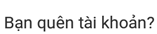
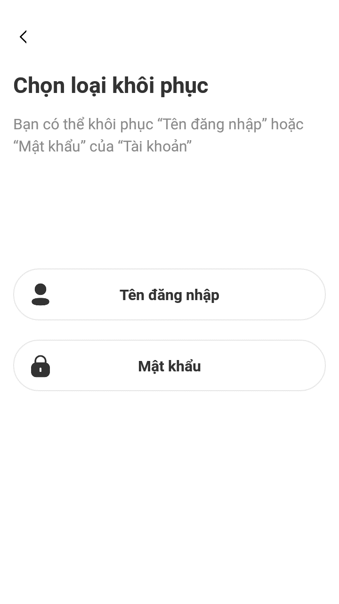
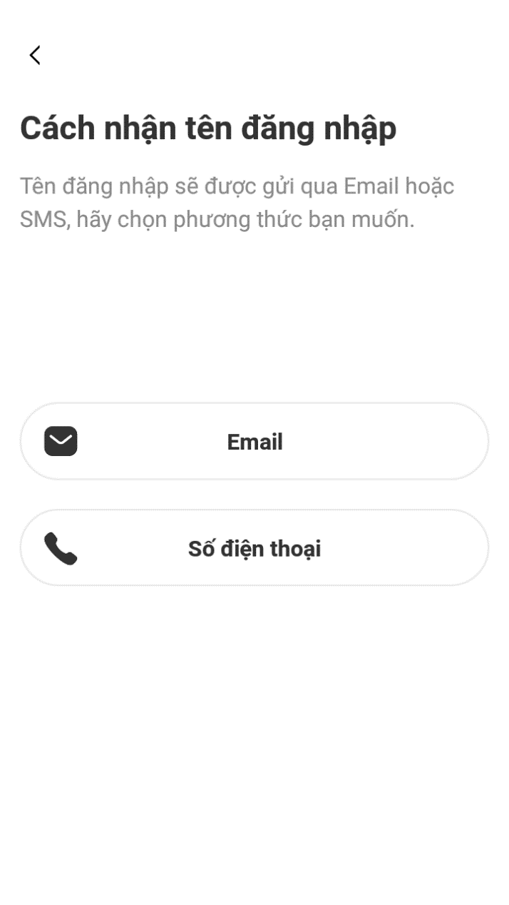
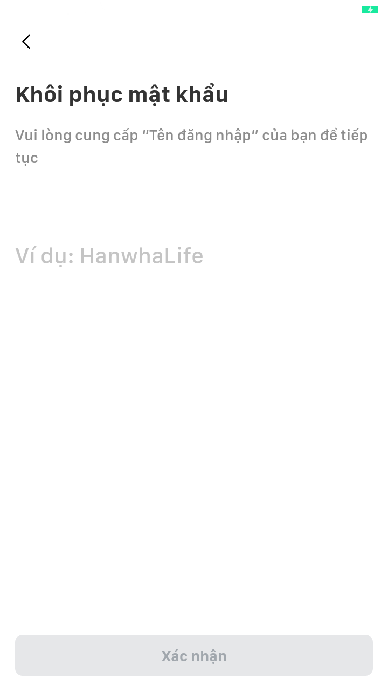

Bước 1: Nhấn chọn xuất hiện trang chọn loại khôi phục.

Bước 2: Chọn “Tên đăng nhập” sau đó hiển thị trang “Cách nhận tên đăng nhập”

- Khách hàng chọn hình thức nhận mã OTP qua email hoặc số điện thoại.

- Nhấn nút “Xác nhận”
- Hệ thống kiểm tra thông tin nhập (địa chỉ email hoặc số điện thoại)
- Nếu thông tin nhập sai: thông báo khách hàng thông tin nhập không tồn tại như sau:
“Thông tin đăng ký không tồn tại, vui lòng kiểm tra lại”.
Nếu thông tin nhập đúng hệ thống gửi mã OTP cho khách hàng hàng đồng thời hiển thị bước tiếp theo cho khách hàng nhập OTP.
Bước 3: Nhập mã OTP
- Khách hàng nhập mã OTP được hệ thống cung cấp.

- Nhấn nút “Xác nhận”
- Hệ thống kiểm tra thông tin OTP khách hàng vừa nhập.
- Nếu mã OTP nhập sai: Hệ thống thông báo mã OTP khách hàng nhập sai và yêu cầu nhập lại.
- Nếu mã OTP nhập đúng: Hệ thống sẽ gửi thông tin tên tài khoản (đã đăng ký trước đó)
và mật khẩu (được phát sinh mới) đến số điện thoại/ email đã đăng ký trước đó của khách hàng.
- Nhấn nút “Gửi lại OTP”
- Khách hàng trong trường hợp không nhận được mã OTP thì nhấn vào nút để được gửi lại mã.